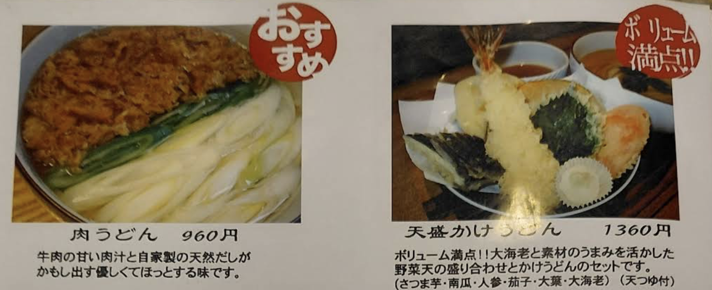

Day 1: 06/18 (四)
出發福岡 • 快樂旅程開始
當地天氣預報
🛫 去程航班資訊
TPE 台北 FUK 福岡
AirAsiaAK 1510
起飛12:00
飛行時間
2h 20m
抵達15:20
座位21A, 21B
託運行李20 kg
手提行李7 kg
🏨 住宿資訊
飯店名稱
天神西通 Richmond 飯店
2 Chome-6-16 Tenjin, Chuo Ward, Fukuoka (點擊導航)
天神西通 Richmond 飯店... (點我導航)
Check-in
14:00 後
Check-out
11:00 前
🗓️ 今日行程
💡 交通小撇步
福岡機場➡️地下鐵
1.出關後: 找尋標示「国際線連絡バス（Internal Shuttle Bus）」的指引。
2.搭乘免費接駁車: 走到 4 號或 5 號月台，搭乘免費接駁巴士「國內線 (地下鐵) 行」前往國內線航廈。
3.抵達國內線: 依照指示搭乘電扶梯到 B1，即可到達地下鐵「福岡機場站」。
搭乘往「筑前前原」或「唐津」方向的列車，坐 5 站（約 11 分鐘）
1.出關後: 找尋標示「国際線連絡バス（Internal Shuttle Bus）」的指引。
2.搭乘免費接駁車: 走到 4 號或 5 號月台，搭乘免費接駁巴士「國內線 (地下鐵) 行」前往國內線航廈。
3.抵達國內線: 依照指示搭乘電扶梯到 B1，即可到達地下鐵「福岡機場站」。
搭乘往「筑前前原」或「唐津」方向的列車，坐 5 站（約 11 分鐘）
09:00
前往桃園機場
機場捷運
10:00
辦理登機
第一航廈
12:00
搭機 (AK 1510)
15:20
入境 / 領取行李
福岡機場
16:00
下午茶：THE MATCHA TOKYO 福岡機場國際線航廈店
📝 Ice Matcha Latte、Ice Hojicha Latte（No Suger and Less ice）
 (點圖放大菜單)
(點圖放大菜單)
(點圖放大菜單)
16:30
搭乘空港線：福岡機場站 → 天神站
地下鐵西7出口
17:00
飯店：天神西通Richmond飯店
Check-in 飯店大廳在2F
18:30
晚餐：炸牛元村（牛かつもと村）
炸牛排，先抽號碼牌有QR Code可看號碼
Day 2: 06/19 (五)
生日快樂！🥳
🗓️ 行程內容
💡 交通小撇步
「West Coast Liner (ウエストコーストライナー)」 高速巴士
1.上車地點： 天神 3 丁目 (飯店附近)，車程： 約 60 分鐘直達「二見ヶ浦・月と太陽糸島茶房前」下車。
2.去程末班車14:42。
3.回程末班車17:31。
1.上車地點： 天神 3 丁目 (飯店附近)，車程： 約 60 分鐘直達「二見ヶ浦・月と太陽糸島茶房前」下車。
2.去程末班車14:42。
3.回程末班車17:31。
11:00
午餐：鰻魚四代目菊川 中洲春吉店
步行16分鐘 1.1公里
12:39
13:39
去程下車點：二見ヶ浦・月と太陽糸島茶房前
14:00
15:31
回程上車點：二見ヶ浦・月と太陽糸島茶房前
高速巴士West Coast Liner (ウエストコーストライナー) ¥1,150
16:31
回程下車點：天神四丁目 (Tenjin 4-Chome)
地下鐵天神站 → 大濠公園站 ¥210
17:00
點心：Kurumi
🎂 蛋糕！
17:30
下午茶：&LOCALS 大濠公園
📝 茶包
19:00
晚餐：博多水炊鍋専門 橙
水炊鍋
Day 3: 06/20 (六)
福岡探索
🗓️ 行程內容
💡 交通小撇步
1.購買地鐵一日券：¥640。
09:30
10:00
甜點：Imonne Hakata
📝 麻糬冰淇淋
10:15
搭乘空港線：博多站 → 大濠公園站
地下鐵4號出口
10:45
午餐：Sanuki Udon Shinari (志成)
📝 天婦羅烏龍麵、牛肉烏龍麵

(點圖放大菜單)12:30
搭乘空港線：大濠公園站 → 中洲川端車站
地下鐵6號或7號出口
13:00
景點：福岡麵包超人兒童博物館
門票¥2,000 客製化鑰匙圈：¥2,420
14:00
逛街：Mina 天神
📝 明月堂：白豆沙饅頭
15:00
下午茶：年輪蛋糕 治一郎
📝 年輪蛋糕、布丁
16:00
下午茶：Full Full Bld. （西1）
📝 明太子法國麵包、黑松露鹽麵包捲
19:00
晚餐：國產牛吃到飽 ワンカルビPREMIUM
📝 燒肉吃到飽（點中價位就好）
Day 4: 06/21 (日)
最後採買 • 平安歸國
🛫 回程航班資訊
FUK 福岡 TPE 台北
AirAsiaAK 1511
起飛16:20
飛行時間
2h 30m
抵達17:50
座位25A, 25B
託運行李20 kg
手提行李7 kg
🗓️ 最後行程
10:00
退房 / 寄放行李
僅帶輕便背包
11:30
午餐：博多拉麵 ShinShin 天神本店
📝 溏心蛋拉麵（煮玉子入りらーめん）
13:00
返回飯店領行李
整理戰利品
13:30
前往福岡機場
地下鐵天神站 → 福岡機場站
伴手禮 (範例)
商品名稱
¥ 800
地點
生活雜貨 (範例)
藥妝 (範例)
其他 (範例)
📝 購物備忘錄
內容會自動儲存，關閉網頁不遺失
💰 簡易匯率換算
輸入日幣，換算台幣 (以 0.21 計算)
NT$ 0
🆘 緊急求助
遇到緊急狀況請保持冷靜。
110 日本警察局 119 日本救護車/消防🏥 醫療 / 旅遊協助
JNTO 觀光醫療熱線
24小時中文對應 • 受傷生病諮詢
台灣駐福岡辦事處
急難救助專線 (24H)
福岡辦事處地址：
福岡市中央區櫻坂 3-12-42